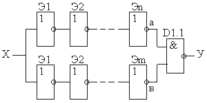
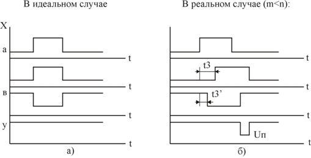
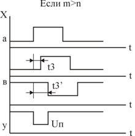
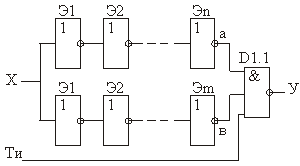

Гонки в комбинационных устройствах
Комбинационное устройство (КУ) - это устройство с m входами и n выходами. Если КУ выполнено на базе идеальных, т.е. безинерционных элементов, состояние выходов однозначно определяется состоянием входов в тот же момент времени. Однако, инерционность элементов и наличие различных факторов, приводящих к задержке распространения сигнала, приводят к задержке появления выходных сигналов КУ, т.е. сигналы на выходе КУ, соответствующие новому состоянию входных сигналов, появляются не сразу, а с некоторой задержкой. При этом в переходный период возможно появление на выходах устройства некоторых промежуточных значений сигналов, не соответствующих заданному состоянию устройства. Такое явление получило название состязаний или гонок. Обычно, вырабатываемые узлами КУ промежуточные значения сигналов, представляют собой импульсы очень малой длительности, являющиеся помехой для всей цифровой системы. Они могут запускать непредусмотренное срабатывание триггеров, счетчиков и осуществлять нежелательные записи в регистры.
Рассмотрим в качестве примера фрагмент схемы комбинационного устройства (рис. 1), где может наблюдаться явление гонок.

Рис. 1 - Фрагмент схемы КУ в которой возможны гонки
n - четное число, m - нечетное число элементов
Для наглядности процесса формирования промежуточного значения выходного сигнала приведены временные диаграммы состояний различных цепей распространения в идеальном и реальном случаях (рис. 2, рис. 3).

Рис. 2 - Временные диаграммы КУ, показывающие процесс образования гонок

Рис. 3 - Временные диаграммы поясняющие работу КУ в случае m>n с реальными логическими элементами:
Uп - напряжение помехи, вызванное на выходе схемы с гонками
Время задержки импульсов в цепях определяется средним временем задержки распространения сигнала всеми элементами этой цепи. Момент времени появления импульса помехи определяется соотношением числа инвертирующих элементов в конкурирующих цепях фрагмента схемы КУ (см. рис. 2, а и рис. 3).
Как следует из рис. 2, а, если элементы схемы идеальные, т. е. безынерционные, (что на практике достичь не удается), на выходе схемы КУ импульс помехи отсутствует. Однако в реальных схемах всегда имеет место явление гонок и требуется создать такие схемы, в которых влияние этого явления устраняется.
Борьба с гонками
Существует три наиболее часто встречающихся способа борьбы с гонками:
- тактирование;
- построение противогоночных схем;
- учет минимального времени задержки распространения сигнала.

Рис. 4 - Пример реализации тактирования цикла работы комбинационного устройства